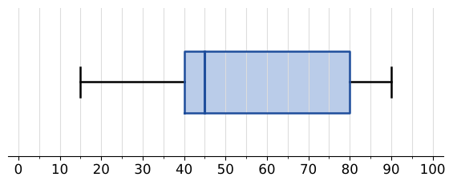

| Session | Questions | Tools | Points |
|---|---|---|---|
| 1 · The Number System; Expressions and Equations | 20 (1–20): 12 multiple choice, 3 select all, 4 short answer, 1 constructed response | No calculator; reference sheet | 23 |
| 2 · Ratios and Proportional Relationships; Geometry; Statistics and Probability | 20 (21–40): 12 multiple choice, 3 select all, 4 short answer, 1 constructed response | No calculator; reference sheet | 23 |
| # | Key | Domain | Skill | Standards |
|---|---|---|---|---|
| 1 | (D) -120 | The Number System | Positive and Negative Numbers | 6.NS.C.5 |
| 2 | (B) 41/10, 14/3, -24/5, 43/5 | The Number System | Absolute Value and Ordering Numbers | 6.NS.C.7d |
| 3 | (A) 756.25 | The Number System | Dividing Multi-Digit Numbers | 6.NS.B.2 |
| 4 | (B) 5/48 | The Number System | Dividing Whole Numbers and Fractions | 6.NS.A.1 |
| 5 | (B) 9 | The Number System | Absolute Value of Rational Numbers | 6.NS.C.7c |
| 6 | (A) 32 units | The Number System | Distance on the Coordinate Plane | 6.NS.C.8 |
| 7 | (A) 7 | The Number System | Comparing and Ordering Rational Numbers | 6.NS.C.7a |
| 8 | (C) $32 | The Number System | Adding and Subtracting Multi-Digit Decimals | 6.NS.B.3 |
| 9 | (B) t is less than or equal to 30 | Expressions and Equations | Inequalities | 6.EE.B.8 |
| 10 | (B) (-5, 1) | The Number System | Rational Numbers and the Coordinate Plane | 6.NS.C.6b |
| 11 | (C) open | Expressions and Equations | Solutions of Equations | 6.EE.B.5 |
| 12 | (D) -9 and -8 | The Number System | Positive and Negative Numbers on the Number Line | 6.NS.C.6a, 6.NS.C.6c |
| 13 | Evaluate 2x + 3y when x = 3 and y = 5. → 21; Evaluate 3x + 4 when x = 7. → 25; Evaluate 2x + 3y when x = 7 and y = 2. → 20 | Expressions and Equations | Writing and Evaluating Algebraic Expressions | 6.EE.A.2c |
| 14 | Evaluate: 8² - 3 × 8 + 5 → 45; Evaluate: [12 + (6 × 9)] ÷ 6 → 11; Evaluate: 12² - 6 × 2 + 6 → 138 | Expressions and Equations | The Order of Operations | 6.EE.A.2c, 5.OA.A.1 |
| 15 | Compute: 22.44 ÷ 6.8 → 3.3; Compute: 98.56 ÷ 7.7 → 12.8; Compute: 520.84 ÷ 5.8 → 89.8 | The Number System | Multiplying and Dividing Multi-Digit Decimals | 6.NS.B.3 |
| 16 | 7 | Expressions and Equations | Solutions of Inequalities on the Number Line | 6.EE.B.8 |
| 17 | 60 | The Number System | Writing and Interpreting Inequality Statements | 6.NS.C.7b |
| 18 | 174 | Expressions and Equations | Equivalent Expressions | 6.EE.A.3, 6.EE.A.4 |
| 19 | 7 | Expressions and Equations | Applications of Inequalities | 6.EE.B.8 |
| 20 | 4-point constructed response | The Number System | Map of a park | |
| 21 | (A) 15 m²; he forgot to multiply by ½ | Geometry | Area of All Triangles | 6.G.A.1 |
| 22 | (A) Table A | Ratios and Proportional Relationships | Equivalent Ratios and Tables | 6.RP.A.3a |
| 23 | (B) 10 ounces for $9.28 | Ratios and Proportional Relationships | Comparing Ratios | 6.RP.A.3a, 6.RP.A.3b |
| 24 | (A) 7 | Ratios and Proportional Relationships | Ratios | 6.RP.A.1 |
| 25 | (B) What are the daily high temperatures in our town this month? | Statistics and Probability | Statistical Questions | 6.SP.A.1 |
| 26 | (D) 60 km | Ratios and Proportional Relationships | Proportions | 6.RP.A.3 |
| 27 | (A) 22 units | Geometry | Perimeter and Area of Polygons on the Coordinate Plane | 6.G.A.3, 6.NS.C.8 |
| 28 | (B) 25 cm² | Geometry | Area of Right Triangles | 6.G.A.1 |
| 29 | (B) 40 | Statistics and Probability | Displaying Data on Dot Plots, Histograms, and Box Plots | 6.SP.B.4 |
| 30 | (C) 110 | Statistics and Probability | Describing Distributions | 6.SP.B.5, 6.SP.A.2 |
| 31 | (A) 4 units | Geometry | Polygons on the Coordinate Plane | 6.G.A.3 |
| 32 | (D) 1380 bottles | Ratios and Proportional Relationships | Ratio and Measurement Units | 6.RP.A.3d |
| 33 | 69% of the songs on a playlist are pop songs. If there are 400 in all, how many is that? → 276; 46% of the students in a school ride the bus. If there are 300 in all, how many is that? → 138; 59% of the seats in a theater are filled. If there are 400 in all, how many is that? → 236 | Ratios and Proportional Relationships | Percent and Rates per 100 | 6.RP.A.3c |
| 34 | A parallelogram has base 17 in. and height 13 in. Find its area. → 221 in²; A kite has diagonals of 12 m and 5 m. Find its area. → 30 m²; A kite has diagonals of 19 m and 11 m. Find its area. → 104 1/2 m² | Geometry | Area of Special Quadrilaterals | 6.G.A.1 |
| 35 | Write 20/50 as a percent. → 40%; Write 3/5 as a percent. → 60%; Write 2/8 as a percent. → 25% | Ratios and Proportional Relationships | A Fraction as a Percent | 6.RP.A.3c |
| 36 | 627 cm² | Geometry | Nets and Surface Area | 6.G.A.4 |
| 37 | $5.31 | Ratios and Proportional Relationships | Unit Rate | 6.RP.A.2, 6.RP.A.3b |
| 38 | 10.5 | Statistics and Probability | Mean and Median | 6.SP.B.5c |
| 39 | 149 5/8 in³ | Geometry | Volume of Right Rectangular Prisms | 6.G.A.2 |
| 40 | 4-point constructed response | Geometry | A storage box |

Mr. K’s Classroom · Grade 6 Practice Test B · Teacher key. Questions 1–19 and 21–39 come from the 6th Grade Math question banks, whose answer keys are recomputed in CI (verify_keys.py).